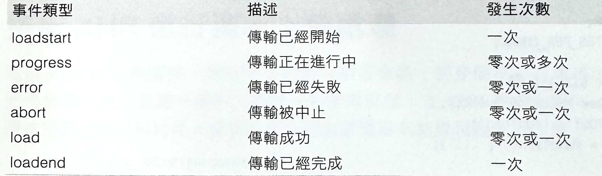
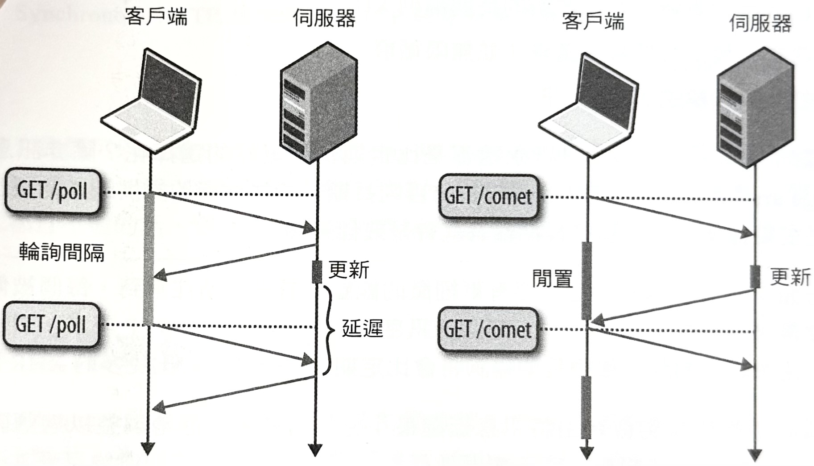

1-18-14 XMLHttpRequest
XMLHttpRequest
（XHR）是能讓客戶端透過 JavaScript，去進行資料傳輸作業的一種瀏覽器層級的 API。XHR
最初是出現在 Internet Explorer 5（簡稱 IE5），而它變成是隱藏在非同步 JavaScript 和
XML（Asynchronous JavaScript and XML，簡稱
AJAX）革命背後的關鍵技術之一，並且幾乎是最近每個最新網頁應用程式的一個重要建構基礎。
XMLHTTP 改變了一切。它把「D」放進了 HTML，而讓我們可以非同步地從伺服器當中取得資料，並且把文件狀態保存在客戶端上…（譯註：「Dynamic」和「Data」英文都是「D」開頭）。由於 Outlook 網頁存取（Outlook Web Access, OWA）團隊希望能在瀏覽器當中，建立出一種富有 Win32 形式的應用程式，因此將相關技術推進了 IE，進而實現了 AJAX。
—Jim Van Eaton 《OWA：網頁革命的催化劑》
在 XHR 之前，網頁必須以重新整理（refresh）的方式來發送，或者取得客戶端和伺服器之間的任何狀態更新資訊。有了 XHR 之後，這項工作就能夠在應用程式 JavaScript 程式碼的完全掌控之下，以非同步方式完成。XHR 就是能夠讓我們直接跳過網頁的建構作業，而去打造出瀏覽器裡的互動網頁應用程式的方式。
然而，XHR 的威力並不只是在瀏覽器內部啟動非同步通訊作業，而且還會讓整個處理作業變得更簡單。XHR 是由瀏覽器所提供的一種應用程式 API，而這可以看成是，瀏覽器自動負責處理所有的低階連線管理、協定協商、HTTP 請求的格式化，以及其他更多的相關作業：
- 瀏覽器會管理連線建立作業、共用池機制，以及中止程序。
- 瀏覽器會決定最佳的 HTTP（S）傳輸方式（HTTP 1.0、1.1、2.0）。
- 瀏覽器會處理 HTTP 快取機制、重新導向作業，以及內容類型的協商處理。
- 瀏覽器會強制執行安全性、身份驗證和隱私限制機制。
- 以及更多的其他處理⋯
不須擔心所有的低階細節，我們的應用程式可以專注在啟用請求的工作邏輯上、管理它們的進展，並處理從伺服器所傳回的資料。一組簡單的 API 結合在所有瀏覽器裡頭都能普遍取用的結果，使得 XHR 變成是瀏覽器裡頭用來進行網路通訊作業的「瑞士刀」（萬用工具）。
因此，幾乎每一種網路通訊情況（腳本控制的下載、上傳、串流，甚至是即時提醒作業）都可以，並已經都建構在 XHR 基礎之上。當然，這並不表示 XHR 在每種情況下都會是最有效率的傳輸方式（事實上，我們將會看到更有效的），但是它確實經常都會被用來當作那些可能無法取用新版瀏覽器的網路通訊 API 的舊版客戶端的一種備用傳輸方式。有了這樣的瞭解之後，就讓我們來進一步地看一下 XHR 的最新能力、它的使用情況，以及可進行和不可進行的效能處理。
完整 XHR API 與其功能的詳盡分析已經超出本書討論範圍—本書的焦點是在「效能」！有關 XMLHttpRequest API 的概要部分，請參考官方 W3C 標準文件（ http://www.w3.org/TR/XMLHttpRequest/ ）。
XHR 簡史
儘管有那樣的名稱，但 XHR 卻從來都沒有刻意只能被束縛在 XML 上。一開始的 XML 前綴字部分，其實是後來眾所皆知，當初決定將 XHR 的第一版，當作是 IE5 裡頭的 MSXML 程式庫的一部分來釋出的痕跡：
當年，在要釋出某個版本之前，僅僅幾天之內，就塞滿了一堆要著手處理的關鍵性功能⋯當我瞭解到 MSXML 程式庫要搭在 IE 上一起被釋出的時候，我就已經和可能提供協助的 XML 團隊做過一些聯絡—我和當時在那個小組的 Jean Paoli 取得聯繫，而我們很快地達成協議，要把某個東西當作 MSXML 程式庫的一部分來運送。因此，對於 XMLHTTP 這個名稱由來的真正解釋是—這東西主要部分還是 HTTP，而且和 XML 完全沒有任何的特殊關係。因此我以運送 XML 這個最簡單的藉口，而需要把 XML 給塞進名稱裡頭。
—Alex Hopmann《XMLHTTP 的故事》（The Story of XMLHTTP）
Mozilla 打造了它自己的 XHR 實作版本來與微軟的版本抗衡，並且透過
XMLHttpRequest
介面來顯露它的 XHR 功能。接著，Safari、Opera，以及其他瀏覽器也都跟進，因而讓 XHR
變成是所有主要瀏覽器廣泛採用的標準——這就是它的名稱由來與引進的原因。事實上，W3C 官方針對
XHR 的工作草案規格在 2006 年就被發佈過了，而在 XHR 的出現才真正地被廣泛使用！
然而，儘管 XHR 大力受到歡迎，並且是 AJAX 革命的關鍵角色，但 XHR 的早期版本只能提供有限的能力：純文字的資料傳輸方式、有限支援的上傳處理能力，而且無法處理跨網域的請求。為了解決這些缺點，在 2008 年所發佈的《XMLHttpRequest Level 2》草案裡頭，加入了以下這些新功能：
- 支援請求逾時（timeout）。
- 支援二進位和純文字的資料傳輸方式。
- 支援媒體類型的應用程式覆寫功能，以及回應的編碼機制。
- 支援每個請求的進展事件的監控機制。
- 支援高效率的檔案上傳作業。
- 支援安全的跨原點請求（cross-origin requests）。
在 2011 年時，《XMLHttpRequest Level 2》規格被合併到最初的
XMLHttpRequest
工作草案裡頭。因此，儘管你常常會找到與 XHR 版本有關的參考資料會提到版本 1（level 1）或版本
2（level 2），但這些其實已經都沒有什麼區別了；現在，就只有被統一過的一種 XHR
規格。事實上，所有的新 XHR2 的特性和功能，都是透過同一個
XMLHttpRequest
API 來提供：相同的介面，卻有更多的功能。
現在所有的最新瀏覽器，全都能夠支援新的 XHR2 功能；相關細節請參考 http://caniuse.com/xhr2 網站文件。因此，每當我們提到 XHR 時，事實上就是在講 XHR2 標準。
跨原點資源共享機制（CORS）
XHR 是一種會自動處理各種低階細節的瀏覽器等級的 API，像是快取處理、重新導向作業、內容協商、驗證程序，以及其他相關機制。這具有雙重目的：首先，它讓應用程式的 API 變得更容易搭配處理，以允許我們把焦點放在主要商業邏輯上。但其次，它允許瀏覽器去進行沙盒處理，以便在應用程式代碼上，強制執行一套安全性和政策限制。
XHR 介面會在每個請求上強制執行嚴格的 HTTP 語義：應用程式提供資料和
URL，而瀏覽器會對請求進行格式化處理，並負責管理每個連線的生命週期。同樣地，儘管 XHR API
允許應用程式添加自訂的 HTTP 標頭（透過
setRequestHeader()
方法），但是有些標頭是禁止被運用在應用程式代碼裡頭的受保護標頭：
- Accept-Charset （可接受字元集）、 Accept-Encoding （可接受編碼）、 Access-Control-* （存取控制相關）
- Host （主機）、 Upgrade （升級）、 Connection （連線）、 Referer （引用）、 Origin （原點）
- Cookie 、 Sec-* （安全相關）、 Proxy-* （代理伺服器相關）以及許多其他的禁用標頭⋯
瀏覽器將拒絕去覆寫任何不安全的標頭，以確保應用程式無法假冒某個假的用戶代理程式（user-agent）、使用者，或是發出請求的來源原點。事實上，保護 原點標頭 是其中特別重要的一項，因為它是要被套用到所有 XHR 請求的「同源策略」（same-origin policy）的關鍵部分。
由應用程式協定、網域名稱，和通訊埠號碼三個部分所組成。例如，(
http, www.example.com, 80
) 和 (
https, www.example.com, 443
) 會被當作是不同的原點。更多相關細節，請參考網頁文章
《The Web Origin Concept》（網頁原點概念）
。
「同源策略」的動機很簡單：瀏覽器會保存不能洩漏給其他應用程式的驗證標記（authentication
token）、cookies，以及私有後設資料之類的使用者資料。例如，
example.com
上的一段任意的腳本程式，在沒有搭配相同原點沙盒的情況下，就可能會去進行存取，並且操作
thirdparty.com
上的使用者資料，而這不符合「同源策略」。
為了解決這樣的特殊問題，XHR
的早期版本被限制只能有相同原點的請求，而請求的原點必須與被請求資源的原點相同：由
example.com
所發起的 XHR 就只能請求來自同樣的
example.com
原點的另一個資源。換句話說，假如相同原點的前提有問題的話，那麼瀏覽器就會直接拒絕去發起 XHR
請求，並引發錯誤狀況。
然而，當必要之時，同源策略也會在 XHR 所用之處放下嚴格限制：假設伺服器想要把某個資源，提供給執行在另一個不同原點上的腳本程式的話，會發生什麼狀況呢？這就是引進「跨原點資源共享」（Cross-Origin Resource Sharing, CORS）的時機了！CORS 會為客戶端的跨原點請求，提供一種安全的選擇性機制：
// script origin: (http, example.com, 80)
var xhr = new XMLHttpRequest();
xhr.open('GET', '/resource.js'); // #(1)
xhr.onload = function() { ... };
xhr.send();
var cors_xhr = new XMLHttpRequest();
cors_xhr.open('GET', 'http://thirdparty.com/resource.js'); // #(2)
cors_xhr.onload = function() { ... };
cors_xhr.send();
- 同源 XHR 請求。
- 跨原點 XHR 請求。
CORS 請求會使用相同的 XHR API，而區別在於被請求資源的 URL
會被關聯到某個與腳本程式執行之處所不同的原點：在上述範例當中，腳本程式是從
(http, example.com, 80)
的原點執行，而第二個 XHR 請求是在存取來自
(http, thirdparty.com, 80)
的
resource.js
。
CORS
請求的選擇性（opt-in）驗證機制，是在較低層級被處理的：請求被產生時，瀏覽器會自動附上被保護的
Origin
（原點）HTTP
標頭，也就是從請求被產生出來的地方所公布的原點。換句話說，遠端伺服器接著就能夠檢查
Origin
標頭，並藉由在它的回應裡頭所傳回的
Access-Control-Allow-Origin
（存取控制允許原點）標頭，來決定是否應該允許該項請求：
=> 請求
GET /resource.js HTTP/1.1
Host: thirdparty.com
Origin: http://example.com #(1)
…
<= 回應
HTTP/1.1 200 OK
Access-Control-Allow-Origin: http://example.com #(2)
…
-
原點（
Origin）標頭是由瀏覽器自動設定的。 - 選擇性（opt-in）標頭是由伺服器所設定的。
在上述範例當中，
thirdparty.com
決定藉由在它的回應裡頭傳回一個適當的存取控制標頭的方式，來選擇與
example.com
共用跨原點資源。或者，假如它想要拒絕存取的話，它就只要忽視
Access-Control-Allow-Origin
標頭即可，而客戶端的瀏覽器就會自動中斷已發出的請求。
假如第三方伺服器不具備 CORS
感知機制的話，那麼客戶端請求將會失敗，因為客戶端總是會去對出現的選擇性標頭進行驗證處理。在某種特殊狀況下，CORS
還允許伺服器傳回一種萬用標頭（
Access-Control-Allow-Origin: *
），來表示允許來自任何原點的存取作業。不過，在啟用這項策略之前，要先審慎考慮一下！
有了那些處理之後，我們該做的應該都做了吧？其實並不盡然，因為 CORS 會採取許多額外的安全預防措施，以確定伺服器具有 CORS 感知機制：
- CORS 請求會忽略掉 Cookie 和 HTTP 驗證之類的使用者憑證。
- 客戶端被限制只能發送「簡單的跨原點請求」，而這會同時限制被允許的方法（GET、POST、HEAD），以及對於可以透過 XHR 來發送和讀取的 HTTP 標頭的存取作業。
若要啟用 Cookie 和 HTTP 身份驗證，客戶端必須在產生請求的時候，在 XHR
物件上設定一個額外屬性（
withCredentials
），而伺服器也必須搭配相對應的標頭（
Access-Control-Allow-Credentials
）來回應，以表示允許應用程式去引入私有的使用者資料。同樣地，假如客戶端需要為請求寫入或讀取自訂
HTTP 標頭，或者要使用一個「不簡單的方法」（non-simple
method）的話，那它必須先透過發出一個「預備請求」（preflight
request）的方式，來請求第三方伺服器的權限（permission）：
# 預備請求
OPTIONS /resource.js HTTP/1.1 #(1)
Host: thirdparty.com
Origin: http://example.com
Access-Control-Request-Method: POST
Access-Control-Request-Headers: My-Custom-Header
# 預備回應
HTTP/1.1 200 OK #(2)
Access-Control-Allow-Origin: http://example.com
Access-Control-Allow-Methods: GET, POST, PUT
Access-Control-Allow-Headers: My-Custom-Header
#（實際的 HTTP 請求） #(3)
- 預備 OPTIONS 請求以驗證權限。
- 來自第三方原點的成功預備回應。
- 實際的 CORS 請求。
官方 W3C CORS 規範定義了必須使用到預備請求（preflight request）的時機和地點： 「簡單」請求可以略過它，但是有很多情況都會觸發它，並且為了權限驗證作業，至少都會增加一次的往返延遲。所幸，一旦做好一個預備請求，它就可以被客戶端進行快取，而避免在每個請求上的相同驗證程序。
所有最新的瀏覽器都支援 CORS；其他說明請參考 caniuse.com/cors 。 針對各種 CORS 政策，以及實作方式的深入部分，請參考官方的 W3C 標準（ http://www.w3.org/TR/cors/ ）。
搭配 XHR 進行資料下載處理
XHR 可以傳輸純文字和二進位兩種資料。事實上，瀏覽器會針對各種原生資料類型，提供自動編碼和解碼處理，而讓應用程式可以把這些類型直接傳給 XHR，而被進行適當的編碼處理，或者是相反地，由瀏覽器針對類型來自動進行解碼作業：
ArrayBuffer
固定長度的二進位資料緩衝區。
Blob
不可變資料（immutable data）的二進位大型物件。
Document
解析過的 HTML 或 XML 文件。
JSON
用來表達某種簡單資料結構的 JavaScript 物件。
Text
一個單純的文字字串。
也就是說，瀏覽器可以根據 HTTP
內容類型（content-type）協商作業來推斷出適當的資料類型（例如，把某個
application/json
回應，解碼成一個 JSON 物件），不然的話，應用程式也可以在發出 XHR
請求時，明確地覆寫資料類型：
var xhr = new XMLHttpRequest();
xhr.open('GET', '/images/photo.webp');
xhr.responseType = 'blob'; // (1)
xhr.onload = function () {
if (this.status == 200) {
var img = document.createElement('img');
img.src = window.URL.createObjectURL(this.response); // (2)
img.onload = function () {
window.URL.revokeObjectURL(this.src); // (3)
};
document.body.appendChild(img);
}
};
xhr.send();
- 將回傳資料類型設定為 BLOB。
- 從 BLOB 建立出唯一物件的 URI，並設定為圖像來源。
- 一旦圖片被載入時，就釋放物件 URI。
請注意到，我們正在以圖片素材本身的原生格式，而不是搭配 base64 編碼機制來進行傳輸作業，並且是把一項圖片元素加入到頁面上，而不是仰賴資料 URI 的方式。因此，在使用 JavaScript 來處理接收到的二進位資料時，就不會有任何的網路傳輸成本，或者是編碼處理成本！XHR API 允許我們從 JavaScript 當中，在不管資料類型的情況下，透過腳本程式的方式來撰寫出有效的動態應用程式。
Blob
介面是屬於 HTML5 File API（檔案
API）的一部分，而且扮演著資料（二進位或純文字）的某個任意區段的一種不透明參照資訊。就它本身而言，一個
blob 參照具有有限功能：你可以查詢它的大小、MIME 類型，並將它分割成更小的
blobs。然而，它的真正角色，是要用來當作各種 JavaScript API 之間的一種有效的內部交換機制。
搭配 XHR 進行資料上傳處理
透過 XHR
來上傳資料，對於所有的資料類型來說，都是簡單又有效率的。事實上，程式碼實際上幾乎都是一樣的，而唯一的差異就是，在
XHR 請求上呼叫
send()
時，我們還會傳進一個資料物件。其餘的部分就由瀏覽器來負責相關處理作業：
var xhr = new XMLHttpRequest();
xhr.open('POST', '/upload');
xhr.onload = function() { ... };
xhr.send("text string"); // 1
var formData = new FormData(); // 2
formData.append('id', 123456);
formData.append('topic', 'performance');
var xhr = new XMLHttpRequest();
xhr.open('POST', '/upload');
xhr.onload = function() { ... };
xhr.send(formData); // 3
var xhr = new XMLHttpRequest();
xhr.open('POST', '/upload');
xhr.onload = function() { ... };
var uIntArray = new Uint8Array([1, 2, 3]); // 4
xhr.send(uIntArray.buffer); // 5
- 1. 上傳一個簡單的字串到伺服器。
-
2.
透過
FormDataAPI 來建立出一份動態表單。 -
3.
將多部分/表單資料（
multipart/form-data）物件，上傳至伺服器。 -
4.
建立一個無號，且具有 8 個位元組大小的整數的有型陣列（
ArrayBuffer）。 - 5. 把位元組的區段資料區上傳至伺服器。
XHR 的
send()
方法接受
DOMString
、
Document
、
FormData
、
Blob
、
File
或
ArrayBuffer
的其中一種物件，並且會自動執行相對應的編碼作業、設定適當的 HTTP
內容類型，並將請求派送出去。那麼，要是需要發送某個二進位
blob
資料，或是要上傳使用者所提供的檔案的話呢？一點也不難：取得物件的參照，並將它傳給 XHR
即可。其實，我們也可以進行一些額外工作，而把一個大的檔案切割成較小的片段資料：
var blob = ...; // 1
const BYTES_PER_CHUNK = 1024 * 1024; // 2
const SIZE = blob.size;
var start = 0;
var end = BYTES_PER_CHUNK;
while (start < SIZE) { // 3
var xhr = new XMLHttpRequest();
xhr.open('POST', '/upload');
xhr.onload = function() { ... };
xhr.setRequestHeader('Content-Range', start + '-' + end + '/' + SIZE);
xhr.send(blob.slice(start, end)); // 5
start = end;
end = start + BYTES_PER_CHUNK;
}
-
1.
任意的
Blob資料（二進位或文字）。 - 2. 將區塊大小設定為 1 MB。
- 3. 以 1 MB 增量的方式，巡覽過所提供的所有資料。
-
4.
公告發佈已上傳的資料範圍（格式：
start-end/total）。 - 5. 透過 XHR 來上傳 1 MB 大小的資料片段。
XHR 並不支援請求串流機制，而這意味著我們在呼叫
send()
時，必須提供完整的有效承載資訊。然而，這個範例所闡述的是一個簡單的應用程式處理方式：檔案會被分割，並透過多個
XHR 請求來上傳所有片段資料。這種實作模式並沒辦法取代真正的請求串流
API，但對某些應用程式來說，卻仍然是可用的解決方案。
大型檔案上傳的切割處理，是用來對不穩定或間歇性連線情況提供更穩固 API 的一種優秀技巧。例如，假如某個片段區塊因遺漏連線而導致失敗時，應用程式就可以重新嘗試，或者是恢復上傳作業，來取代從頭重新啟動整個傳輸作業的方式。
下載和上傳進度的監控方式
網絡連線可能會發生間歇情況，而且延遲和頻寬也都會高度變動。因此，我們要如何知道某個 XHR 請求已經成功、逾時，或者是失敗呢？XHR 物件會提供一種很方便的 API，來讓我們去偵聽用來表示請求的目前狀態的進度事件（progress event）（請參考表 15-1）。
表-1 ：XHR 進度事件

每個 XHR 傳輸程序都是會先從
loadstart
事件開始，並到
loadend
事件結束，而在這段過程之間，會有一次或多次額外事件被引發來表示傳輸狀態。因此，若要監控進度狀況，應用程式可以在
XHR 物件上註冊一組 JavaScript 事件偵聽器（event listener）。
var xhr = new XMLHttpRequest();
xhr.open('GET', '/resource');
xhr.timeout = 5000; // 1
xhr.addEventListener('load', function() { ... }); // 2
xhr.addEventListener('error', function() { ... }); // 3
var onProgressHandler = function (event) {
if (event.lengthComputable) {
var progress = (event.loaded / event.total) * 100; // 4
...
}
};
xhr.upload.addEventListener('progress', onProgressHandler); // 5
xhr.addEventListener('progress', onProgressHandler); // 6
xhr.send();
- 將請求逾時設定為 5,000 毫秒（預設值：無逾時）。
- 註冊請求成功的回呼函數（callback）。
- 註冊請求失敗的回呼函數。
- 計算傳輸進度。
- 註冊上傳進度事件的回呼函數。
- 註冊下載進度事件的回呼函數。
load
或
error
事件之一將會被引發一次，以表示 XHR 傳輸作業的最後狀態，而
progress
事件則會引發好幾次，以便為傳輸狀態的追蹤作業提供一個方便的 API：我們可以拿
loaded
（已下載資料量）和
total
（總資料量）屬性做比較，來推斷出已經完成傳輸的資料量。
若要估計已傳輸的資料量，伺服器必須在它的回應當中，須提供一項內容長度資訊：我們無法估計已分段傳輸的進度，因為就精確度來看，回應的總計大小是屬於未知的。
此外，XHR 請求並沒有預設的逾時時間（
timeout
），也就是請求可能會無期限地處於「進行中」（in
progress）狀態。最好的實作慣例，就是永遠要為你的應用程式設定一個有意義的逾時時間，並掌握任何的錯誤狀況！
搭配 XHR 進行資料串流處理
在某些情況下，應用程式可能需要，或想要遞增地以串流方式（streaming）來處理資料：當客戶端上有可用資料時，就將它上傳到伺服器，或者是一收到來自伺服器的資料後，就對已下載到的資料進行處理。遺憾的是，儘管這是一個很重要的使用案例，但目前（2014）對於 XHR 卻還沒有一個簡單、有效的跨瀏覽器 API 可用：
-
send方法預期在上傳的情況下，會有完整的承載資料。 -
response、responseText和responseXML屬性，都沒有針對串流處理方式來設計。
「串流機制」（streaming）還不是官方 XHR 規範裡的一種使用案例。因此，除了手動地把上傳作業分割成較小的個別 XHR 的方式之外，並沒有可用來將資料以串流方式，從客戶端上傳至伺服器的 API。同樣地，雖然 XHR2 規範確實有提供一些可從伺服器讀取部分回應的能力，但實作成果卻是既沒效率又受限。這似乎不是一件好事。
所幸，整個情況並非那麼令人絕望！把缺乏串流支援當作是 XHR 的重要使用案例，是一種公認的限制，進而就要去解決問題：
網頁應用程式應該擁有能取得和處理各種不同形式資料的能力—包括會隨著時間變成可用的一連串資料序列。這項規範明確定義了 Streams（串流）的基本呈現方式、Streams 會引發的錯誤，以及用來讀取和建立 Streams 的程序性方法。
—W3C Stream API
結合 XHR 和 Streams API，將會啟用瀏覽器裡的有效 XHR 串流機制。然而，Streams API 仍然處於積極討論中的階段，而不是任何瀏覽器都可用的機制。因此，在這種情況下，我們就無計可施了嗎？事實上，那倒還不至於。就像我們之前有提到的那樣，搭配 XHR 來進行串流上傳作業並不是一種選項，但是我們確實擁有搭配 XHR 來進行串流下載的有限支援能力：
var xhr = new XMLHttpRequest();
xhr.open('GET', '/stream');
xhr.seenBytes = 0;
xhr.onreadystatechange = function() { // 1
if (xhr.readyState > 2) {
var newData = xhr.responseText.substr(xhr.seenBytes); // 2
// 處理 newData
xhr.seenBytes = xhr.responseText.length; // 3
}
};
xhr.send();
- 訂閱狀態和進度的通知訊息。
- 從部分的回應當中解出新的資料。
- 更新已處理的位元組偏移量。
這個範例將能在大多數的最新瀏覽器當中運作起來。不過，效能並不是很好，而且會有大量的實作警告和錯誤：
-
請注意
，我們是以手動方式來追蹤已看過位元組的偏移值（offset），然後再手動地對資料進行切割處理：
responseText會對整個回應進行緩衝處理！對於小規模的傳輸來說，這可能不會是個問題，但是對於較大規模的下載狀況，以及特別是在行動裝置之類的記憶體有限設備當中時，這就會是個麻煩。要釋放已緩衝處理過的回應的唯一方式，就是完成該次請求，並另外開啟一個新的請求。 -
部分回應
只能從
responseText屬性裡頭被讀取出來，而這限制我們就只能進行純文字傳輸作業。目前沒有任何可用來讀取二進位傳輸的部分回應的方式。 - 一旦有部分資料被讀取到 ，我們就必須識別出訊息的邊界：應用程式邏輯必須定義它們自己的資料格式，然後對串流進行緩衝和解析作業，來解出個別的訊息。
- 瀏覽器對於它們對已接收資料的緩衝處理方式會有所不同 ：某些瀏覽器可能會馬上釋放出資料，而其他的瀏覽器則可能會對小規模回應進行緩衝處理，並以較大的片段區塊方式來釋放它們。
-
瀏覽器在允許被逐漸讀取的內容類型上會有所不同
—— 例如，有些允許
text/html，而其他的就只能搭配application/x-javascript使用。
總之，目前 XHR 串流機制既沒效率也不方便，而更糟的是，缺乏某種共同規範的情況，也意味著它的實作方式會隨瀏覽器的不同而有所差異。因此，除非等到 Stream API 變成可用機制，否則 XHR 並不適合用在串流機制上。
需絕望！ 儘管 XHR 可能不符合條件，但是我們還有可針對串流使用案例來進行最佳化處理的其他傳輸方式：
- Server-Sent Events 提供了可用來從伺服器到客戶端之間，進行純文字資料串流處理的一套方便的 API。
- WebSocket 也同時針對二進位和純文字資料，提供了有效的雙向串流處理機制。
XHR 串流機制的專屬 API 和擴充功能
Firefox 和 IE 瀏覽器都有提供自訂的「串流 XHR 擴充功能」：
-
Firefox
有支援
moz-chunked-text（分段文字）和moz-chunked-arraybuffer（分段陣列緩衝資料）。 -
Internet Explorer
有支援
ms-stream（串流）。
藉由在 XHR 物件上把
responseType
屬性設定為上述類型之一的方式，這兩種瀏覽器就能避免對整個回應進行緩衝處理，並且還允許從
XHR 物件上逐步地讀取二進位回應。遺憾的是，在
Chrome、Opera，或其他熱門的瀏覽器上，並沒有提供相同的支援能力。因此，XHR
串流機制仍然是跨瀏覽器應用程式的一種不切實際的傳輸方式。
即時通知與傳送作業
XHR 能透過一個簡單而有效的方式，來讓客戶端的更新狀況與伺服器同步：必要時，XHR 請求會由客戶端被派送出去，以便更新在伺服器上的相對應資料。然而，同樣的問題在相反的情況下，卻是困難許多。假如資料是在伺服器上被更新過的話，伺服器要如何通知客戶端呢？
HTTP 並沒有針對伺服器提供任何的方式，來讓它去對客戶端開啟一個新的連線。因此，若要接收即時通知（real-time notification），客戶端就必須對伺服器進行更新情況的輪詢作業（poll），或者是利用某種串流傳輸方式，來讓伺服器在有新的通知可用時，將它推送給客戶端。不幸的是，就像我們之前所看到的那樣，XHR 串流的支援情況是受限的，所以我們就只剩 XHR 輪詢方式可用。
「即時」（real-time）對不同應用程式來說，有不同的含義：有些應用程式要求標準要在毫秒以內才算，而其他應用程式則可能允許有幾分鐘以內的延遲情況。為了決定出最佳的傳輸方式，首先要為你的應用程式，定義出清楚的延遲和成本目標！
搭配 XHR 的輪詢方式
從伺服器取得更新的最簡單策略之一，就是讓客戶端進行一項定期檢查作業：客戶端能夠以某個時間週期，來啟動一個背景 XHR 請求（對伺服器進行輪詢），去進行更新的檢查作業。假如在伺服器上有可用的新資料的話，它就會在回應當中被傳回，否則傳回的就會是個空的回應。
「輪詢機制」（polling）實作起來很簡單，但通常都是非常沒有效率的。輪詢間隔的選定是相當關鍵的部分：長的輪詢間隔時間會轉變成更新的延遲傳輸情況，而短的間隔時間則會同時造成客戶端和伺服器的非必要流量，以及更高的成本。讓我們來思考一個最簡單的可能案例：
function checkUpdates(url) {
var xhr = new XMLHttpRequest();
xhr.open('GET', url);
xhr.onload = function() { ... }; // 1
xhr.send();
}
setInterval(checkUpdates.bind(null, '/updates'), 60000); // 2
- 處理從伺服器收到的更新資訊。
- 每 60 秒發出一次 XHR 請求。
輪詢機制的問題：
- 每個 XHR 請求都是一個獨立的 HTTP 請求，而且一般來說，HTTP 在請求/回應標頭上，就會負擔 800 個位元組以內的成本（不包含 HTTP 的 cookie 部分）。
- 定期檢查作業會在資料如預期間隔般到達的情況下運作得很好。然而，這種情況較為例外，而非常態。因此，定期輪詢將會在伺服器上有可用訊息，與它對客戶端的傳輸之間，帶來額外的延遲情況。
- 除非經過深思熟慮，否則輪詢機制往往會在無線網絡上，變成是一種所費不貲的效能反效果；相關細節請參閱《排除週期性與無效率的資料傳輸情況》。喚醒無線電會消耗大量的電池能量！
那麼，最理想的輪詢間隔是多少呢？ 完全沒有！輪詢頻率取決於應用程式的需要，而在效率與訊息延遲之間本來就存在著一種權衡情況。因此，輪詢比較適合輪詢間隔時間較長、新事件會以可預期的速率到達，以及以傳輸負載量較高的應用程式上。這種組合會提供額外的 HTTP 成本，並將訊息的傳輸延遲時間降到最低。
塑造 XHR 輪詢機制的效能模型
為了說明 XHR 輪詢方式的延遲時間和成本之間的權衡情況，讓我們以會使用 XHR 輪詢機制，來檢查伺服器上的訊息更新情況的一個簡單的電子郵件應用程式為例。實作方式如同底下這樣：
- 每 60 秒，客戶端就會發送一個 XHR 來檢查更新情況。
- 每個 XHR 請求都含有客戶端已知的最新訊息 ID。
- 伺服器會以客戶端 ID 來與它自己的訊息列表進行比較。
- 伺服器會回應一份新訊息的列表，或者是空的列表（無任何更新狀況）。
假如有個新訊息在客戶端進行更新檢查之前就到達伺服器的話，那麼延遲時間是最小的——剛好就是客戶端和伺服器之間的延遲。相反地，同樣的新訊息要是在客戶端檢查過後才到達，那麼在這種情況下，該訊息就必須等待，直到下一次的客戶端檢查作業為止（60 秒）。因此，要是訊息到達率是隨機的話，那麼一個平均消息將會在客戶端取得它之前，先在伺服器上等待 30 秒。
一般的 HTTP 1.x 請求會增加 800 個位元組左右的請求和回應成本（請參考《協定成本的測量和控制方式》）。因為客戶端會被登錄，因此我們還會擁有一個額外的驗證 cookie 和訊息 ID；讓我們假定這會增加另外的 50 個位元組。因此，一個不會傳回任何新訊息的請求就已經會產生出 850 個位元組的成本！現在，假設我們擁有 10,000 個客戶端，而全部都會以 60 秒間隔來進行輪詢處理的情況：
(850 個位元組 × 8 位元 × 10,000 / 60 秒) ≈ 1.13 Mbps
每個客戶端都會在每個請求上送出 850 個位元組的資料，而這會轉成每秒 167 個請求，並且在伺服器上帶來持續湧入 1.13 Mbps 的吞吐量！而且那還是沒有把任何新的訊息傳輸給任何客戶端時的一個固定通訊量。
30 秒的延遲會太高嗎？我們可以減少輪詢的間隔時間，但這樣做的話，我們就會產生出更高的吞吐量和成本：同樣的 10,000 個客戶端，但是以 1 秒的間隔時間的話，將會產生超過 60 Mbps 的吞吐量！總之，除非輪詢間隔夠長，否則輪詢機制是很昂貴的。
搭配 XHR 進行長期輪詢處理
搭配定期輪詢機制所面臨的挑戰是，其中會潛在許多不必要的，以及空的查詢作業。有這樣的概念之後，假設我們稍微修改一下輪詢機制的工作流程（如圖-1）：在沒有可用更新時，我們是否可以把原本會傳回空的回應的方式，改成讓連線保持閒置狀態，直到有某個可用更新為止的作法呢？
圖-1 ：輪詢機制（左）與長期輪詢機制（右）的延遲情況

啟用一個長期持有的 HTTP 請求（「一個掛在線上的 GET」）來讓伺服器可以把資料推送至瀏覽器的技巧，也就是所謂的「Comet」。然而，你可能會碰到這項技巧的其他稱呼，像是「反向 AJAX」（reverse AJAX）、「AJAX 推送」（AJAX push），或是「HTTP 推送」（HTTP push）。
藉由將連線開啟狀態維持到有任何更新可用為止的方式（長期輪詢），資料就可以當它在伺服器上變成可用時，就立刻被發送給客戶端。因此，長期輪詢（long polling）會針對訊息延遲提供最佳狀況的方案，而且它還能消除無意義的檢查作業，進而降低 XHR 請求的數量和輪詢的整體成本。一旦有更新被送達，長期輪詢請求便會結束，並等待下一個可用訊息：
function checkUpdates(url) {
var xhr = new XMLHttpRequest();
xhr.open('GET', url);
xhr.onload = function() { // 1
// 處理已收到的更新
checkUpdates('/updates'); // 2
};
xhr.send();
}
checkUpdates('/updates'); // 3
- 處理已收到的更新，並開啟新的長期輪詢 XHR。
- 為下次更新發出長期輪詢請求（並無限循環）。
- 發出初始長期輪詢 XHR 請求。
搭配那樣的方式，長期輪詢是否永遠都是比定期輪詢更好的選擇呢？除非訊息到達率（message arrival rate）是已知和固定，否則長期輪詢往往能夠提供較佳的訊息延遲。假如那是主要標準的話，那麼長期輪詢就會是最佳選擇。
在另一方面，有關成本的討論需要有更細微的觀點。首先，請注意到，每個被傳遞的訊息仍然會帶來相同的 HTTP 成本；每個新訊息都是一個獨立的 HTTP 請求。然而，假如訊息到達速率較高的話，那麼長期輪詢將會比定期輪詢方式，發出更多的 XHR 請求！
動態長輪詢透長期輪詢會藉由將訊息延遲最小化的方式，動態地調整以適應訊息到達率，而那是一種你可能想要，或不想要進行的一項行為反應。假如能夠忍受某些訊息延遲情況的話，那麼輪詢可能就會是較有效率的傳輸方式——比如說，要是更新率較高，那麼輪詢程序會提供一個簡單的「訊息聚合」（message aggregation）機制，以便減少請求數量，並提高行動手機上的電池壽命。
實際上，並非所有的訊息都具有相同的優先權或延遲需求。因此，你可能會想要去考慮某種混合策略：在伺服器上聚合低優先權的更新資訊，並針對高優先權的更新情況觸發立即傳輸作業；相關細節請參考《Nagle 和高效伺服器推播技術》。
透過 XHR 長期輪詢機制的 Facebook 聊天室
實際上，長期輪詢已經成為針對以 XHR 來傳輸即時通知訊息的最被廣泛使用的方法之一。儘管它可能不是最有效的傳輸方式，但是它既簡單又可靠，而且任何有 XHR 能力的瀏覽器都能支援。像 Facebook 聊天室之類的熱門產品，就是透過這種特有的方法，而在 2008 年被首次部署到線上的：
我們選擇從某個使用者來取得另一個使用者的文字的方法，是在每個 Facebook 頁面上載入一個
iframe，並讓那個iframe的 JavaScript，產生出會透過一個持久連線的 HTTP GET 請求，而那個請求會一直等到伺服器擁有客戶端的資料之後，才會被傳回。假如請求被中斷或逾時的話，它就會被重新建立起來。這並不是什麼新技術：這是一種 Comet 的變形，一種特別的 XHR 長期輪詢，或者是 BOSH（Bidirectional-streams Over Synchronous HTTP，透過同步 HTTP 的雙向串流機制）。— Facebook 聊天室 Facebook 技術部落格
現在，我們可以透過 Server-Sent Events 和 WebSocket 來更有效率地實現相同的功能。話雖如此，但 XHR 仍然是許多即時程式框架的一個通用可靠策略。假如所有方式都行不通的話，那就由長期輪詢機制來處理了！
XHR 使用案例與效能
XMLHttpRequest 是讓我們能夠從建構瀏覽器裡的頁面，躍進打造互動網頁應用程式範疇的好幫手。首先，它啟動了在瀏覽器裡頭的同步通訊機制，但是，更重要的是，它還讓整個程序變得很簡單。腳本化 HTTP 請求的派送和控制作業，就只要花上幾行 JavaScript 程式碼，而瀏覽器就會接管所有的其餘處理工作：
- 瀏覽器會對 HTTP 請求進行格式化處理，並對回應進行解析作業。
- 瀏覽器會強迫執行相關安全性（同源）政策。
- 瀏覽器會處理內容協商作業（例如，gzip 機制）。
- 瀏覽器會處理請求和回應的快取作業。
- 瀏覽器會處理身份驗證、重新導向，以及更多的其他工作任務⋯
因此，XHR 對於任何依循 HTTP 請求-回應循環的傳輸方式來說，是一種多功能且高效能的傳輸方式。在需要讀取一個得經過驗證的資源時，是否應該要在傳輸過程當中被進行壓縮處理呢？或者是否應該要被進行快取，以便未來查找呢？瀏覽器會負責處理這一類的所有狀況，並讓我們可以專注在應用程式邏輯上！
然而，XHR 也有其本身的限制。正如我們所看到的，串流機制還不是 XHR 標準中的一項正式使用案例，而且支援情況也被限制：搭配 XHR 來進行串流處理既沒有效率，也不方便。不同瀏覽器還會有不同的行為反應，甚至更不可能實現有效率的二進位串流機制。總之，XHR 並不適合用來進行串流處理。
同樣地，對於搭配 XHR 來即時更新的傳達作業上，也沒有什麼最佳策略。定期輪詢會產生高成本和訊息延遲時間。長期輪詢會有較低的延遲，但仍然在每個訊息上都會有一樣的成本存在；每個訊息都是它自己的獨立 HTTP 請求。若要同時兼具低延遲和低成本，我們就需要有 XHR 串流機制！
因此，儘管 XHR 是「即時」傳輸作業的一項熱門機制，但它可能不是最佳的傳輸方式。最新的瀏覽器會同時支援 Server-Sent Events（SSE，伺服器發送事件） 和 WebSocket 這類更簡單又有效率的選項。因此，除非你有什麼特殊理由非得使用 XHR 輪詢機制不可，否則就應該去使用那些最新的支援功能。